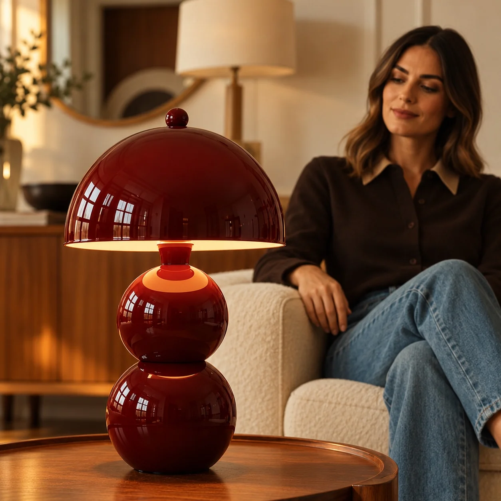
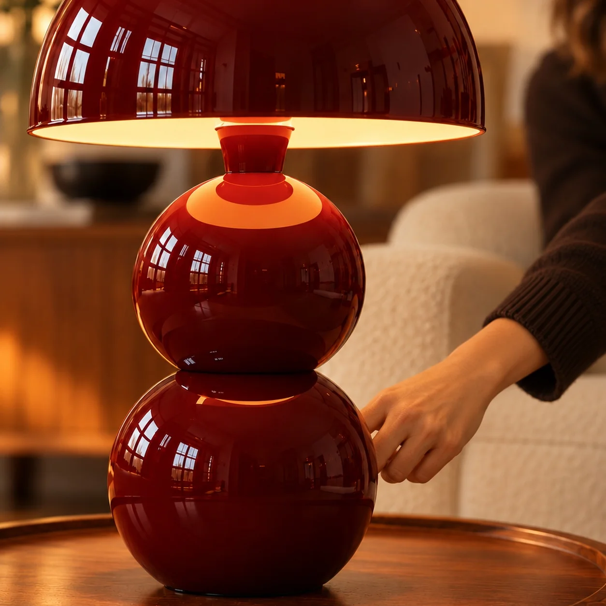
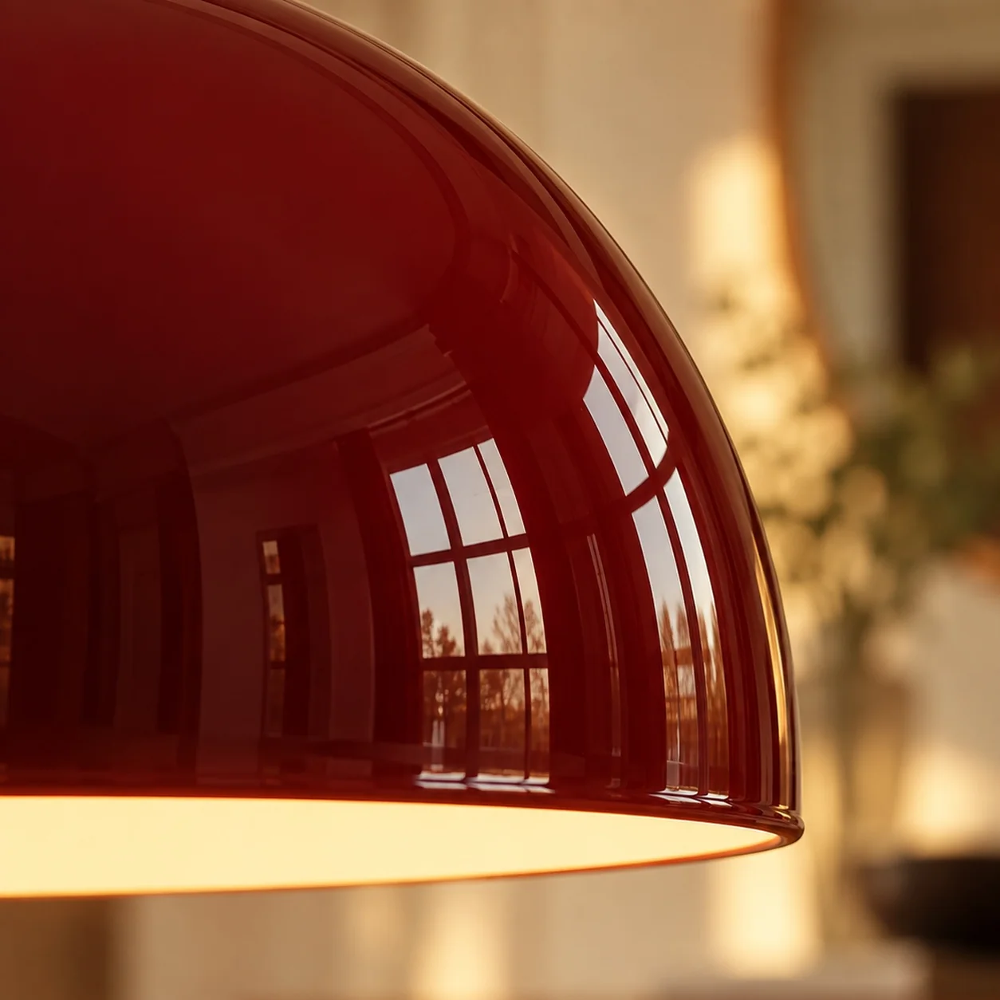
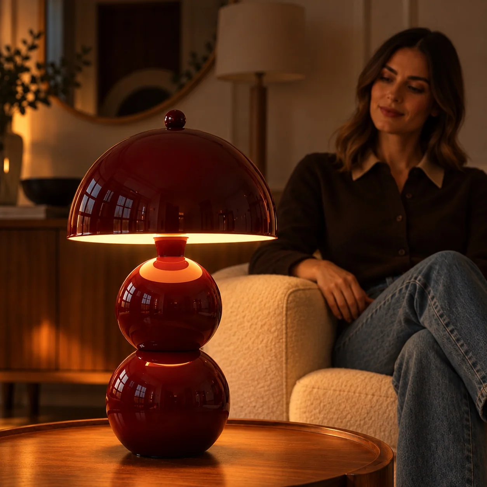

AYDINLATMA / BAĞIMSIZ KONSEPT ÇALIŞMA
Bordonun Işığı
Parlak bordo masa lambasının formunu, sıcak ışığını ve yaşam alanındaki etkisini farklı açılardan anlatan bağımsız AI konsept çalışması.

PROJE FİLMİ
Bir ışık, yeni bir atmosfer.
Bordo lambanın detaylarını ve yaşam alanına kattığı sıcaklığı gösteren 14 saniyelik film. Oynatma ve ses kontrolü sizde.
GÖRSEL SERİ
Işığın farklı halleri.




BİRLİKTE ÜRETELİM
Sizin ürününüz için nasıl bir hikâye kurabiliriz?
Bağımsız AI konsept çalışması · Marka iş birliği değildir.